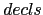
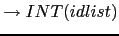
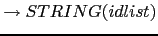
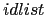
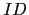

| 2 |  |
|
| 4 |  | |
| 5 |  | |
| 6 |  |
|
Los nodos declaration son un hash con una clave TYPE la cual
apunta a la estructura de datos/objeto
describiendo el tipo. La otra clave del hash IDLIST apunta a una
lista de identificadores. Los elementos de esta lista son simples
identificadores (identificados en la gramática árbol anterior
como
y no como objetos 
).
La parte de la gramática implicada en las declaraciones es:
| declaration
|
| idlist
|
Así pues, el código construye un nodo de la clase
INT o STRING según sea el caso.
sub declaration() {
my ($t, $class, @il);
if (($lookahead eq 'INT') or ($lookahead eq 'STRING')) {
$class = $lookahead;
$t = &type();
@il = &idlist();
return $class->new(TYPE => $t, IDLIST => \@il);
}
else {
Error::fatal('Se esperaba un tipo');
}
}
Observe la llamada $class->new(TYPE => $t, IDLIST => \@il)
en la cual la clase se usa a través de una referencia simbólica.